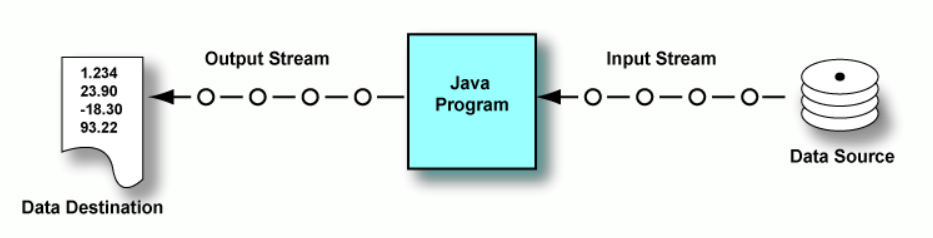

I/O Input/Output - Entrada/Salida de la información
Todo dato tiene un origen de entrada o un destino de salida (convenientemente en inglés: I/O). Input o entrada implica leer datos de una fuente y Output o salida implica escribirlos en un destino. Un programa trabaja con datos que provienen de una entrada la cual puede ser un teclado, un archivo en disco o un socket a través de la red. Así mismo un programa genera resultados enviándolos a una salida la cual puede ser la pantalla, un archivo en disco o un socket a través de la red. En Java, la conexión entre un programa y un origen o destino de datos se denomina flujo (en inglés: stream).

Un flujo de entrada (input stream) maneja los datos que fluyen hacia un programa. Un flujo de salida (output stream) maneja los datos que salen de un programa.
🛣️ Formas de acceso a un fichero en Java
Java permite trabajar con ficheros de distintas formas, dependiendo de lo que queramos hacer con ellos. Las principales son:
| Forma de acceso | Descripción | Ventajas principales |
|---|---|---|
| Acceso secuencial | Se accede al fichero de principio a fin, en orden. | Simple, eficiente para leer o escribir de forma lineal. Ideal para archivos de texto. |
| Acceso aleatorio | Permite posicionarse en cualquier parte del archivo. | Útil cuando se necesita modificar o consultar partes concretas. Más complejo. |
| Lectura completa en memoria | Se lee todo el contenido del archivo y se guarda en una estructura (por ejemplo, una lista de líneas). | Muy cómodo para trabajar, pero no recomendado si el archivo es muy grande. |
📝 ¿Qué significa acceso secuencial?
Significa que el archivo se lee o escribe de principio a fin. No se puede saltar directamente a una posición concreta, sino que hay que recorrerlo.
Ejemplo: BufferedReader, BufferedWriter, Files.newBufferedReader(), Files.write()...
🧭 ¿Y acceso aleatorio?
Significa que puedes moverte a cualquier parte del archivo (por ejemplo, al byte 250) y empezar a leer o escribir desde ahí.
Ejemplo: RandomAccessFile (lo veremos más adelante).
⚡ ¿Y leerlo todo de golpe?
A veces quieres leer un archivo pequeño entero, por ejemplo:
List<String> lineas = Files.readAllLines(Paths.get("archivo.txt"));
🔄 Tipos de flujos en Java: Binarios vs Caracteres
Cuando trabajamos con ficheros en Java, es importante entender qué tipo de datos estamos leyendo o escribiendo. Esto influye en el tipo de flujo (stream) que debemos usar. Existen dos tipos de flujos (streams) según el tipo de datos, flujos binarios y flujos de caracteres.
Internamente, todos los datos consisten en patrones de bits agrupados en bytes. Entonces, lógicamente, todos los flujos podrían llamarse "flujos de bytes" (byte streams). Sin embargo, los flujos destinados a bytes que representan caracteres se denominan "flujos de caracteres" (character streams) y todos los demás se denominan "flujos de bytes".
Al escribir y leer datos de caracteres, éstos están en un formato legible para el ser humano, sin embargo, los datos binarios implican leer y escribir bytes que no son legibles si los abrimos en un editor de texto.
📦 Flujos binarios (byte streams)
- Usados para leer o escribir datos en formato binario (imágenes, vídeos, ficheros PDF, etc.).
- No interpretan el contenido como texto, sino como bytes puros.
Clases típicas:
- InputStream (abstracta)
- FileInputStream
- BufferedInputStream
- OutputStream (abstracta)
- FileOutputStream
- BufferedOutputStream
🔤 Flujos de caracteres
Usados para trabajar con texto (ficheros .txt, .csv, .xml...). Están optimizados para datos de caracteres.
Interpretan los datos usando una codificación de caracteres (como UTF-8).
Clases típicas:
- Reader (abstracta)
- FileReader
- BufferedReader
- Writer (abstracta)
- FileWriter
- BufferedWriter
La siguiente figura muestra la jerarquía del paquete java.io:

📋 Resumen de flujos en Java
| Forma de acceso | Descripción breve | ¿Cuándo usarla? | Clases más importantes |
|---|---|---|---|
Basado en rutas (File, Path) |
Trabaja con rutas de ficheros y directorios, sin leer ni escribir contenido. | Para comprobar si existe, crear carpetas, borrar archivos, mover, copiar... | File, Path, Paths, Files |
| Flujos binarios | Trabajan con bytes. Adecuado para imágenes, audio, datos binarios sin formato. | Cuando se manejan archivos no de texto o binarios puros | InputStream, OutputStream, FileInputStream, FileOutputStream |
| Flujos de caracteres | Trabajan con texto. Se basan en caracteres Unicode. | Lectura y escritura de archivos .txt, .csv, .json, etc. |
Reader, Writer, FileReader, FileWriter, BufferedReader, BufferedWriter |
NIO.2 (java.nio.file) |
API moderna desde Java 7. Más robusta, segura, con mejor gestión de errores. | Siempre que puedas. Sustituye a muchas tareas antiguas de java.io |
Files, Path, Paths, DirectoryStream |
| Acceso aleatorio | Permite leer y escribir en cualquier parte del archivo sin recorrerlo todo. | Para editar partes específicas de archivos grandes | RandomAccessFile |